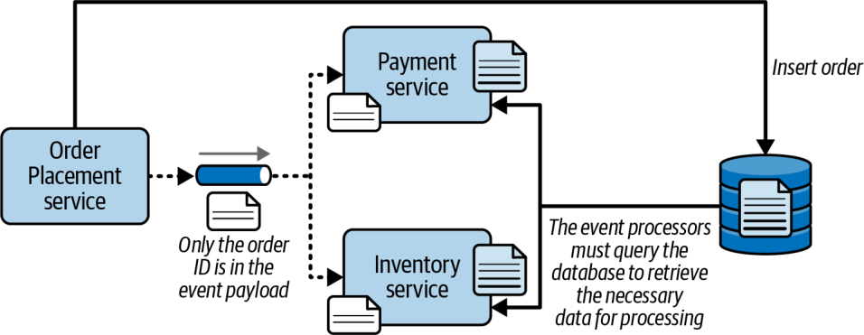
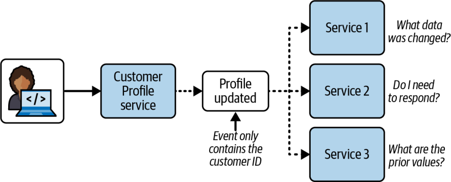

محمولهٔ رویدادِ مبتنی بر کلید (key-based event payload) محمولهای است که تنها کلیدی را در بر دارد که بافتارِ رویداد را مشخص میکند (مانند شناسهٔ سفارش یا شناسهٔ مشتری). با محمولههای رویدادِ مبتنی بر کلید، پردازندههای رویدادی که به رویداد پاسخ میدهند باید از پایگاهداده پرسوجو کنند تا اطلاعات لازم برای پردازش رویداد را بازیابی کنند.
هنگامی که مشتری سفارشی ثبت میکند، پردازندهٔ رویداد Order Placement سفارش را در پایگاهداده درج میکند و رویدادی مبتنی بر کلید به نام order_placed را برمیانگیزد. این رویداد تنها یک مقدار کلیدی را در قالب JSON ساده در بر دارد که شناسهٔ سفارش است:
{ "order_id": "123" }یکی از عیبهای اصلی محمولههای رویدادِ مبتنی بر کلید این است که هر پردازندهٔ رویدادی که به رویداد پاسخ میدهد، باید از پایگاهداده پرسوجو کند تا اطلاعات لازم برای پردازش سفارش را به دست آورد. برای نمونه، وقتی پردازندهٔ رویداد Payment به رویداد پاسخ میدهد، باید اطلاعات سفارشی را که برای پردازش پرداخت لازم دارد از پایگاهداده پرسوجو کند. پردازندهٔ رویداد Inventory نیز همزمان به رویداد پاسخ میدهد، پس آن هم باید از پایگاهداده پرسوجو کند تا شناسه و تعداد کالا را بازیابی کند. این امر میتواند از پاسخگویی، کارایی و مقیاسپذیری بکاهد و پایگاهداده را زیر بار ببرد، بهویژه در معماریای بهشدت موازی و ناهمگام مانند معماری رویدادمحور. (برای راههای کاستن از این ریسک، بخش «توپولوژیهای داده» در صفحهٔ ۲۶۸ را ببینید.) محمولههای رویدادِ مبتنی بر کلید همچنین وقتی دادههای لازم بهآسانی در دسترس نباشند (مثلاً اگر درون زمینهٔ محدودِ پردازندهٔ رویدادِ دیگری قرار داشته باشند) چالشبرانگیز میشوند. شکل ۱۵-۱۲ این فن را نشان میدهد.

با این حال، استفاده از محمولههای رویدادِ مبتنی بر کلید مزیتهای فراوانی دارد که برخی از آنها ممکن است بر مسائل کارایی و مقیاسپذیری بچربند. نخستین مزیت اصلی، سازگاری و یکپارچگیِ کلیِ بهتر دادههاست، به لطف داشتنِ یک سیستم مرجعِ واحد. از آنجا که دادههای مربوط به رویداد تنها در یک جا (پایگاهداده) قرار دارند، محمولههای رویدادِ مبتنی بر کلید میتوانند تغییرات داده در حین پردازش رویداد را بسیار آسانتر از محمولههای رویدادِ مبتنی بر داده مدیریت کنند.
دومین مزیت اصلی این است که چون قرارداد در محمولههای رویدادِ مبتنی بر کلید بسیار ساده است و بهندرت تغییر میکند، معماران معمولاً آن را با JSON یا XML آزاد و بدون طرحواره (schema-less) پیادهسازی میکنند. از این رو، محمولههای رویدادِ مبتنی بر کلید با مسائلی که محمولههای رویدادِ مبتنی بر داده معمولاً در مدیریت تغییر قرارداد، نسخهبندی، و راهبردهای اطلاعرسانی و منسوخسازی دارند، روبهرو نیستند.
مزیت دیگر محمولههای رویدادِ مبتنی بر کلید این است که مسائل کوپلینگ مُهری و پهنای باندِ محمولههای رویدادِ مبتنی بر داده را ندارند. از آنجا که هیچ دادهٔ مبهمی (opaque data) به رویداد پیوسته نیست، قراردادها ساده و کوچکاند و کمترین پهنای باند را مصرف میکنند. بنابراین، از دیدگاه شبکه و کارگزار پیام (message broker)، این محمولهها معمولاً سریعتر از محمولههای رویدادِ مبتنی بر داده عمل میکنند.
انتخاب میان محمولهٔ رویدادِ مبتنی بر داده و محمولهٔ مبتنی بر کلید، تحلیل دقیق مصالحهها را میطلبد. به یاد داشته باشید که این انتخاب از نوع «همه یا هیچ» نیست: هر نوع رویداد میتواند نوع محمولهٔ متفاوتی به کار ببرد. جدول ۱۵-۱ مصالحههای مربوط به محمولههای رویدادِ مبتنی بر داده و مبتنی بر کلید را خلاصه میکند.
| معیار | محمولههای مبتنی بر داده | محمولههای مبتنی بر کلید |
|---|---|---|
| کارایی و مقیاسپذیری | خوب | بد |
| مدیریت قرارداد | بد | خوب |
| کوپلینگ مُهری | بد | خوب |
| مصرف پهنای باند | بد | خوب |
| دسترسیِ محدود به پایگاهداده | خوب | بد |
| شکنندگیِ کلیِ سیستم | بد | خوب |
توجه کنید که مصالحهٔ کلی میان این دو گزینه در نهایت به مقیاسپذیری و کارایی در برابر مدیریت قرارداد و مصرف پهنای باند خلاصه میشود. برای هر رویدادِ مشخص بپرسید کدامیک مهمتر است. برخی پردازشهای رویداد به سطوح بسیار بالایی از مقیاس و کارایی نیاز دارند که در این صورت محمولهٔ رویدادِ مبتنی بر داده گزینهٔ بهتری است؛ دادههای برخی پردازشهای رویداد نیز پیوسته تغییر میکنند که در این صورت محمولهٔ رویدادِ مبتنی بر کلید ممکن است مناسبتر باشد.
مانند بیشتر مسائل در معماری نرمافزار، انتخابهای معماران روی یک طیف قرار دارند، نه یک دوگانهٔ ساده. به همین دلیل مهم است که مراقب باشیم چیزی را برنینگیزیم که رویدادهای کمخون نامیده میشوند.
رویداد کمخون (anemic event) رویدادی مشتق است که محمولهاش اطلاعات کافی برای کمک به پردازندهٔ رویداد در تصمیمگیری ندارد و بافتار لازم برای پردازشهای پاییندستیِ بعدی را نیز فاقد است.
شکل ۱۵-۱۳ یک رویداد مشتقِ کمخون را نشان میدهد. در این مثال، مشتری برخی اطلاعات نمایهٔ کاربریاش را بهروز کرده است. پس از بهروزرسانیِ این اطلاعات در پایگاهداده، پردازندهٔ رویداد Customer Profile رویداد profile_updated را با یک محمولهٔ رویدادِ مبتنی بر کلید برمیانگیزد که تنها شناسهٔ مشتری را بهعنوان دادهٔ کلیدی منتقل میکند.
سه سرویسی که به این رویداد پاسخ میدهند، تنها شناسهٔ مشتری و این بافتار را دریافت میکنند که نمایهٔ مشتری تغییر کرده است. سرویس نخست (Service 1) هیچ نمیداند کدام داده در نمایه تغییر کرده است: نام، نشانی، یا اطلاعات حیاتیِ دیگری؟ متأسفانه پرسوجو از پایگاهداده نمیتواند به این پرسش پاسخ دهد، پس Service 1 هیچ نمیداند چگونه پاسخ دهد یا چه کنشی انجام دهد. Service 2 به رویداد profile_updated پاسخ میدهد، اما تنها با تکیه بر کلید نمیداند که آیا باید پردازش افزودهای انجام دهد یا نه. سرانجام، Service 3 به همان رویداد پاسخ میدهد، اما هیچ نمیداند مقادیر پیشین چه بودهاند و از این رو نمیتواند پردازشش را انجام دهد. هر سه پردازندهٔ رویداد باید به نحوی به بهروزرسانیِ نمایه از سوی مشتری پاسخ دهند، اما به دلیل کمبود اطلاعات نمیتوانند. اینها رویدادهای کمخوناند: رویدادهایی که اطلاعات افزودهای برای پردازش بیشترِ رویداد در بر ندارند.

برای پرهیز از رویدادهای کمخونی مانند این، اطلاعات بهروزشدهٔ مشتری و نیز مقادیر پیشین را در رویداد بگنجانید، زیرا بیشتر پایگاهدادهها معمولاً این اطلاعات را بازتاب نمیدهند.
این نمونهای از طیفِ دانهبندیِ محمولهٔ رویداد است. در منتهاالیهِ چپ این طیف، محمولههای رویدادِ مبتنی بر کلید قرار دارند که در آنها تنها کلید درون رویداد جای دارد. هرچند این روش هنگام ایجاد یا حذف سفارش سودمند است، وقتی مشتری سفارشی را بهروز میکند بهخوبی کار نمیکند. در منتهاالیهِ راست طیف، محمولهٔ رویدادِ مبتنی بر داده قرار دارد که همهٔ دادهها را، چه لازم باشند چه نباشند، در بر میگیرد. اینجاست که کوپلینگ مُهری چهرهٔ زشتش را نشان میدهد. سناریوی بهروزرسانیِ نمایهٔ مشتری جایی میان این دو سرِ طیف قرار میگیرد، زیرا سطح مناسبی از اطلاعات را فراهم میکند و بدین ترتیب از مشکلِ رویداد مشتقِ کمخون پرهیز میکند.
| واژهٔ انگلیسی | معادل مصوب/بهکاررفته در این بخش |
|---|---|
| Key-Based Event Payload | محمولهٔ رویدادِ مبتنی بر کلید |
| Context Key | کلیدِ بافتار |
| Schema-less | بدون طرحواره |
| Contract Change Management | مدیریت تغییر قرارداد |
| Opaque Data | دادهٔ مبهم |
| Message Broker | کارگزار پیام |
| Trade-off Summary | خلاصهٔ مصالحهها |
| All-or-Nothing | همه یا هیچ |
| Restricted Database Access | دسترسیِ محدود به پایگاهداده |
| Overall System Fragility | شکنندگیِ کلیِ سیستم |
| Spectrum (vs. Binary) | طیف (در برابر دوگانه) |
| Anemic Event | رویداد کمخون |
| User Profile | نمایهٔ کاربری |
| Event Payload Granularity | دانهبندیِ محمولهٔ رویداد |